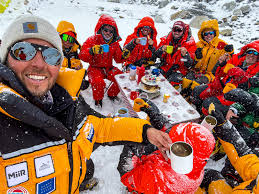

Mount Everest is the highest peak in the world which stands at 8848 m high altitude from sea level. Mount Everest named by name of Sir George Everest in 1865 AD. It is located in the Solukhumbu district of Nepal. Mount Everest, known in Nepalese as Sagarmatha and in the Tibetan language they are called as Chomolungma (Zhumulangma). There are other local names also provided for Mount Everest like Third pole, Peak xv, and local sherpa’s they called Deudhunga. Everest is believed to be 60 million years old. Everest was formed by the movement of earth’s tectonic plates, as the Indian subcontinental plate collides with the Eurasian continental plate. No one knew that Mt Everest was the top of the world until the 19th century. Mount Everest was first conquered by Sir Edmund Percival Hillary KG and Tenzing Norgay Sherpa on 29 May 1953 AD. Out of the 10 highest mountains, 8 of them are in Nepal. Among them, the most popular one is Mount Everest. People attempt to climb Mount Everest in 1920 AD.
 A little less than 5000 climbers have tried to climb Mount Everest. 240 of them never came back. The fatality rate of Mount Everest is 6.5%. Avalanche unexpected climate is the Main region of mountaineers failure to climb a high mountain. Unexpected storms, avalanches, freezing temperatures, high winds, crevasse and the dangers presented by the extreme high altitudes are extremely hard to overcome even for the most experienced climbers. However, the use of advanced gear and technology made in modern time and the use of highly trained guides help in decreasing the fatality rate.
Mount Everest is a one of a valuable natural treasure of Nepal. Most of the people know Nepal as a country of Mount Everest. If someone said us” where are you from? Normally we will also say from the country of Mount Everest. It’s our luck to born in this country.